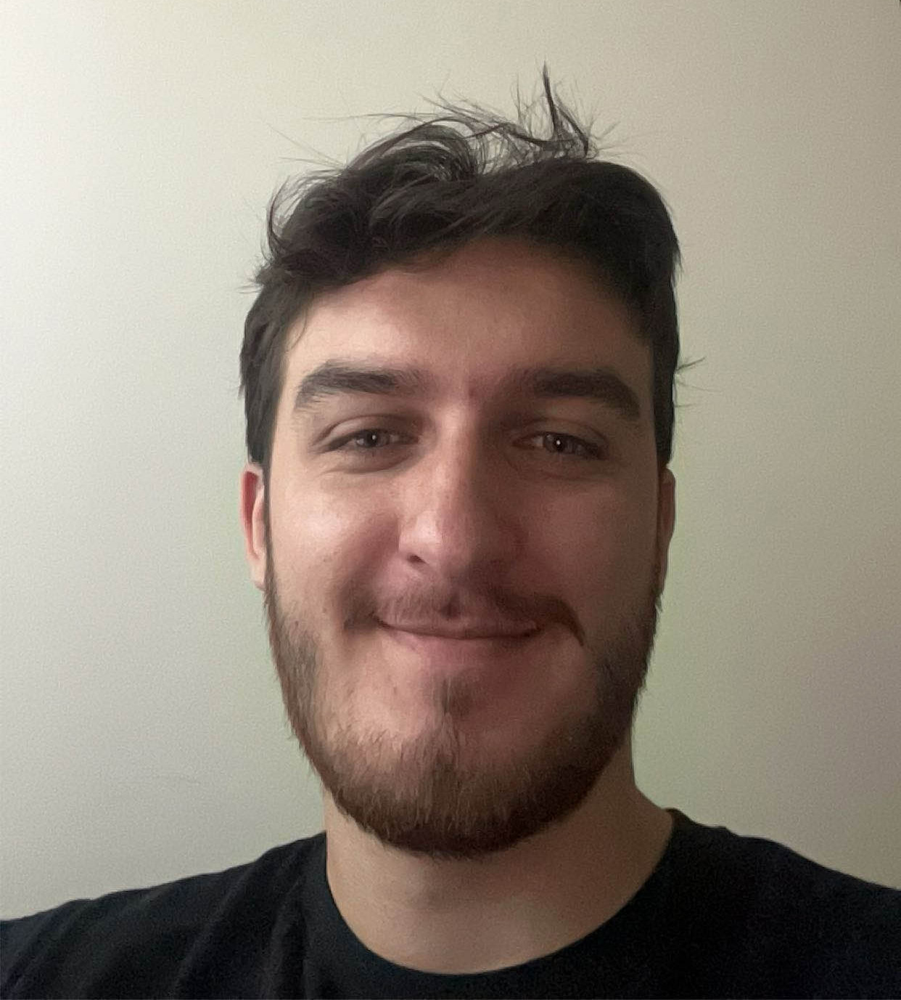

About Me

I am a digital media art major at San Jose State University that is primarily focused on visual effects and design. I plan to graduate with a Bachelor of Fine Arts, Digital Media Art in December, 2024. Even though I originally started out as a photo and video editor for friends and small passion projects, my work has transformed into visual effects and design work that focuses more on my own style. Now the pieces I create focus on minimalism and surrealism, where I enjoy editing out whatever isn’t essential in the scene and creating something abstract and chaotic with the visuals that are remaining.